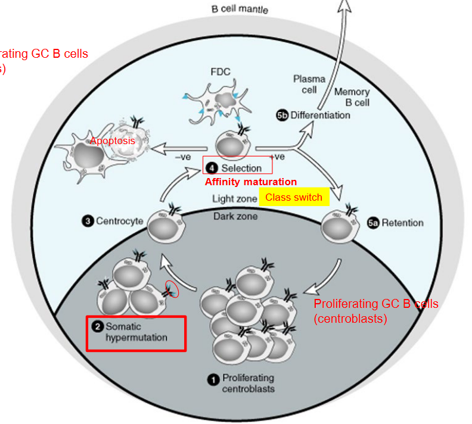
4 B Cell Effector Development and T Cell Development
Germinal centers (GCs) are special areas in our immune system where B cells, important cells for fighting infections, undergo changes to become more effective. Inside the germinal center, there are two main types of B cells: centrocytes and centroblasts.
Centrocytes are B cells that are not growing as quickly as centroblasts. They are like the quieter students in a classroom. Centrocytes have already experienced some changes and mutations to their genes, making them different from regular B cells.
Centroblasts, on the other hand, are the busy students in the classroom. They are rapidly dividing and making lots of copies of themselves. These centroblasts are changing their genes a lot, which helps them develop new abilities to fight off germs.
In the germinal center, centrocytes and centroblasts work together to help our bodies fight infections better. Centrocytes are involved in a process called “affinity maturation,” where they try to find the best way to recognize and attack germs. Meanwhile, centroblasts are busy making more B cells with new abilities.
4.1 Memory B Cells
4.1.1 T-Cell Dependent Memory B Cells
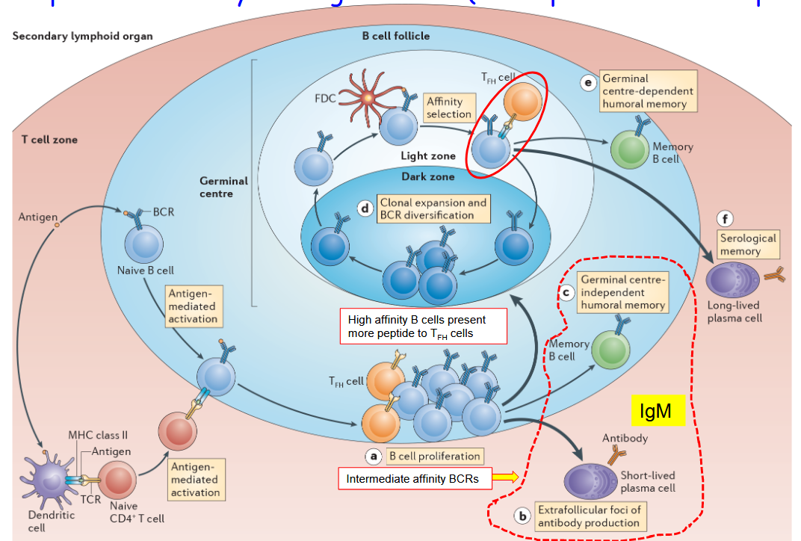
Sometimes, when our immune system tries to fight off infections, the antibodies made by B cells might not be strong enough to grab onto the germs tightly. This happens when the “affinity” of the B cell receptors (BCRs) towards the germ isn’t very high. It’s like trying to catch a slippery fish with your hands slightly wet – sometimes, it’s not easy to grab onto it firmly.
When the affinity of the BCR towards the germ isn’t high enough during the first fight against an infection, not all activated B cells will go through the germinal center reaction. The germinal center is like a special place where B cells can get better at fighting infections. But if the B cells don’t have strong enough “weapons” (or BCRs), they might not be selected to go through this process.
After the first battle, our immune system still remembers the germs it fought against. It does this by creating memory B cells. Some of these memory B cells are created in the germinal center, with the help of T cells. These are called T-cell dependent memory B cells. However, there are also memory B cells that don’t need the germinal center to form – they’re created in other ways, like when our bodies fight off less serious infections.
4.1.2 Becoming Plasma or Memory B Cells
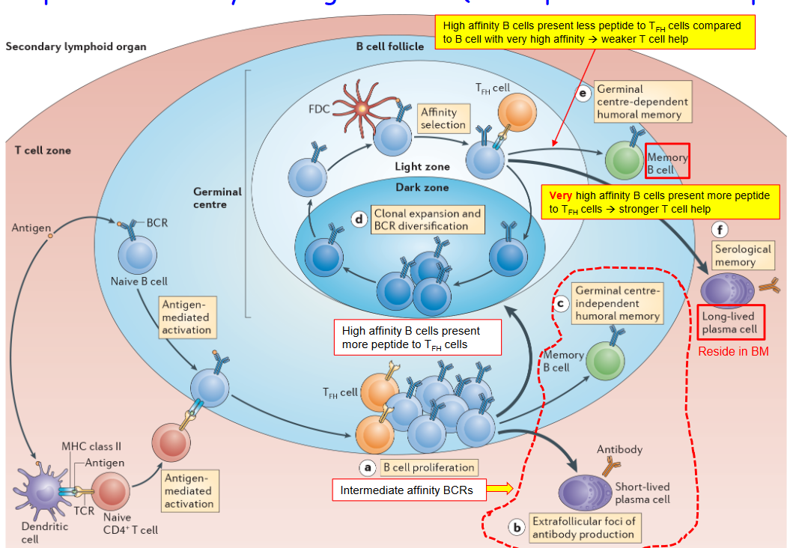
During the germinal center (GC) reaction, B cells face an important decision: should they become memory cells or plasma cells? This decision-making process is like choosing between two different paths after finishing a class – one leads to more studying, while the other leads to showing what you’ve learned.
In the GC reaction, B cells that have been trained and improved in the germinal center face this choice. Some B cells decide to become memory cells. These memory B cells store information about the germs they fought against, so if they come back, the body is ready to fight them off faster and stronger.
On the other hand, some B cells choose to become plasma cells. These plasma cells are like factories that produce lots of antibodies. They pump out antibodies into the bloodstream, helping the body fight off infections.
The decision about whether to become a memory cell or a plasma cell depends on signals and cues the B cells receive during the GC reaction. It’s like getting advice from teachers and friends about what to do after finishing a class – the B cells listen to different signals from the immune system and make their decision based on that.
4.1.3 Returning to the Dark Zone
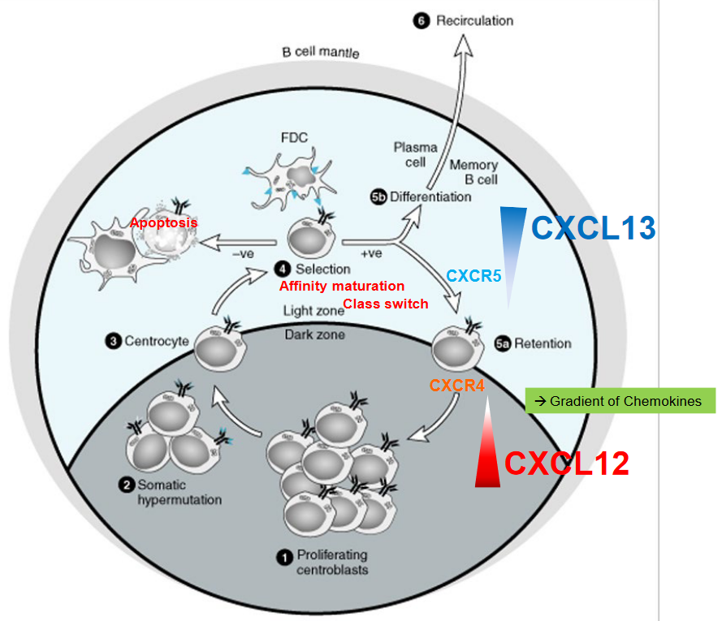
During the germinal center (GC) reaction, B cells face a crucial decision: whether to return to the “dark zone.” The dark zone is a specific area within the germinal center where B cells undergo intense changes and improvements, much like students studying in a quiet library to improve their grades.
The decision for B cells to return to the dark zone is influenced by signals and cues they receive from their surroundings within the germinal center. It’s like hearing whispers and advice from friends about where to go next after finishing a task.
In the dark zone, B cells undergo processes like somatic hypermutation, where their genes are changed to help them become better at fighting infections. These changes are crucial for developing high-quality antibodies that can effectively recognize and neutralize pathogens.
Returning to the dark zone allows B cells to continue their education and refinement process, preparing them to become more effective defenders against infections. It’s like going back to the drawing board to improve upon previous work and make necessary adjustments.
4.1.4 T-Independent B Cell Activation
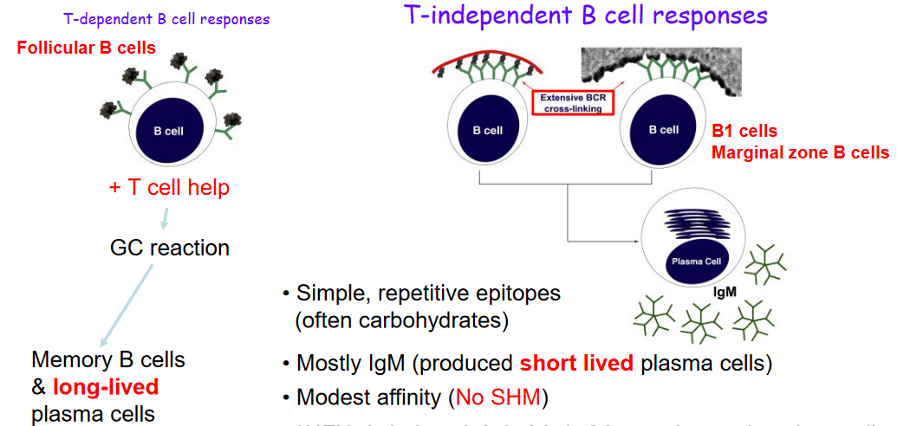
T-independent B cell activation is a process where B cells are activated without the help of T cells, like students studying on their own without a teacher’s guidance.
This type of activation happens when B cells encounter simple and repetitive parts of germs called epitopes. It’s like recognizing the same pattern over and over again.
Most of the time, T-independent B cell activation leads to the production of a type of antibody called IgM. These antibodies are made by short-lived plasma cells, which are like temporary factories producing antibodies.
The antibodies produced during T-independent activation usually have a modest affinity, meaning they might not be super strong at fighting off germs.
However, if a molecule called IF\(\gamma\) is around, B cells can also make other types of antibodies like IgG3 and IgG2a. It’s like having different tools available depending on the situation.
Unlike T-dependent activation, where memory cells are created, T-independent activation doesn’t create memory cells. It’s like not having notes to remember what was learned during a self-study session.
4.1.5 Secreting or Binding an Antibody to the B Cell Membrane
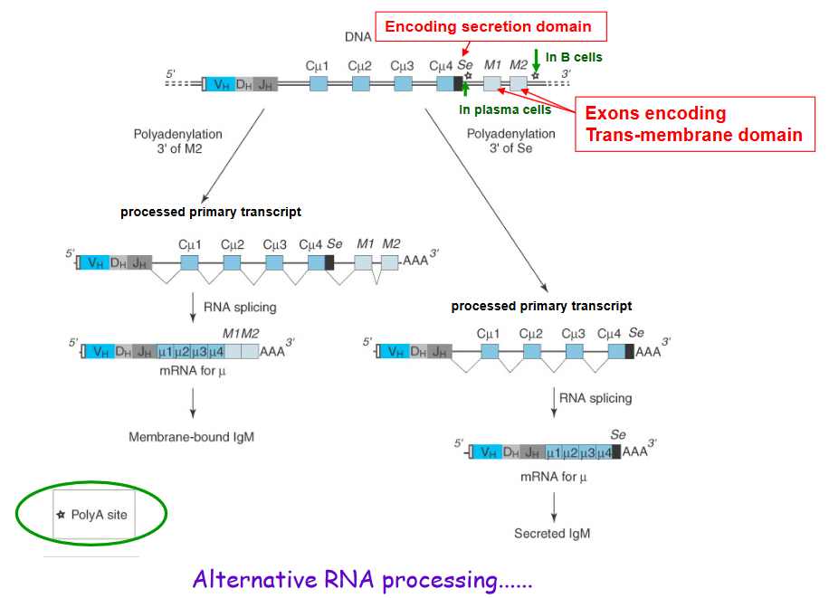
Producing secreted immunoglobulins (Ig) instead of membrane-bound ones is like choosing between two different forms of a superhero costume – one with a cape and one without. In our immune system, this choice is made by B cells when they decide whether to produce secreted Ig or membrane-bound Ig.
To make secreted Ig, B cells use a special encoding trick. They include a specific “secretion domain” in the genetic instructions for making Ig. This domain acts like a signal, telling the cell to produce Ig that can be released into the bloodstream, similar to how a superhero might choose a costume without a cape for more freedom of movement.
On the other hand, when B cells want to make membrane-bound Ig, they include exons that encode a “trans-membrane domain.” This domain anchors the Ig to the surface of the B cell, like a superhero’s cape attached to their costume.
The choice between secreted and membrane-bound Ig is not a permanent decision. B cells can use a superhero-like power called “alternative RNA processing” to change their minds. This process allows B cells to modify the genetic instructions for making Ig, choosing whether to include the secretion domain for secreted Ig or the trans-membrane domain for membrane-bound Ig.
4.2 Antibody Functions
4.2.1 Why Different Antibodies of Different Isotypes?
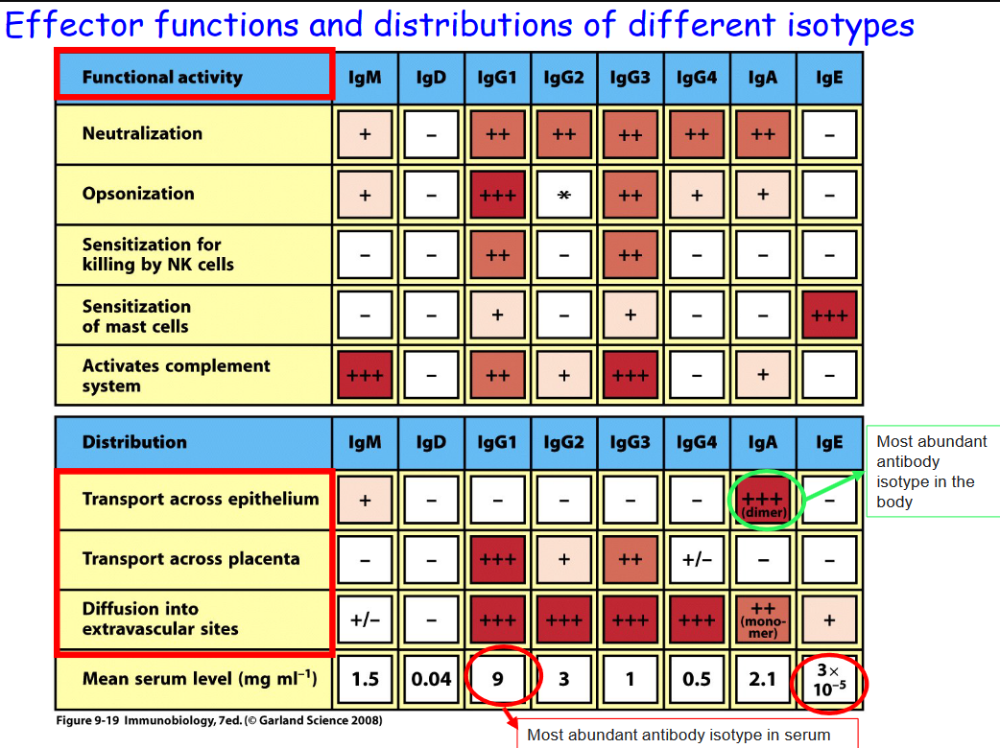
Different kinds of antibodies in the above table can lead to different functions within the body, some of which will be focused on in BS3036:
4.2.1.1 Neutralization
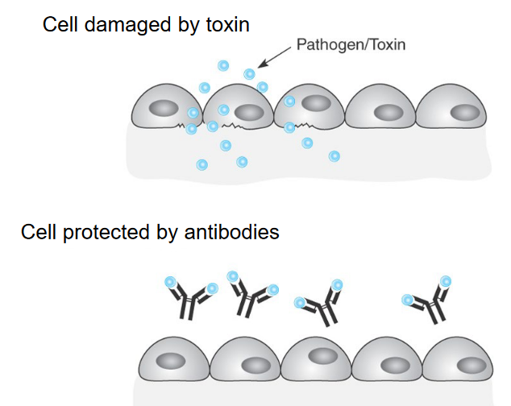
Neutralization is like putting a lock on a door to keep intruders out. In our immune system, neutralization is a powerful defense mechanism that helps block harmful invaders like viruses and bacteria from causing infection.
Imagine the invader as a key trying to unlock our cells and cause harm. Neutralization works by producing antibodies, which are like special keys that fit perfectly into the locks on the invaders, preventing them from entering our cells.
4.2.1.2 Blocking Pathogens or Receptors
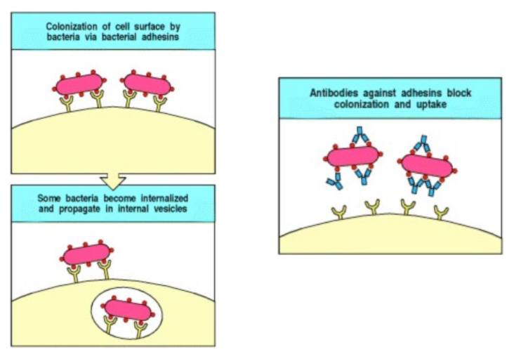
Antibodies can also bind to the epitopes of the pathogens or to cell receptors to prevent the pathogen from gaining entry into the cell.
4.2.1.3 Opsonisation
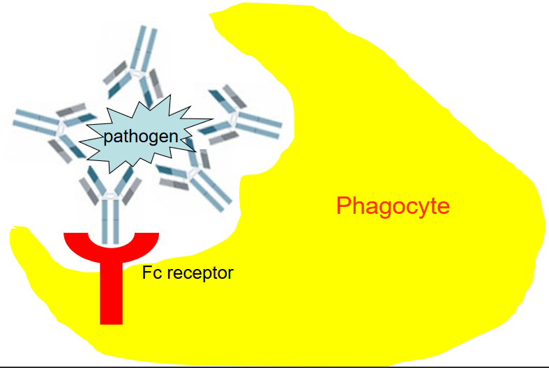
Opsonization is like putting a bright sticker on a dirty dish to show it needs to be cleaned. In our immune system, opsonization is a clever way to mark pathogens, like bacteria or viruses, for destruction by specialized immune cells called phagocytes.
Imagine the pathogen as a dirty dish that needs to be washed. Opsonization works by attaching antibodies to the surface of the pathogen, just like sticking a bright sticker on the dirty dish. These antibodies act as markers, signaling to the phagocytes that the pathogen needs to be ingested and destroyed.
In the process of opsonization, the antibodies bind to specific sites on the pathogen’s surface, making it easier for phagocytes to recognize and engulf the invader. This binding occurs through the Fc receptors found on the surface of phagocytes, which act like hooks that latch onto the antibodies attached to the pathogen.
4.2.1.3.1 Fc Receptors
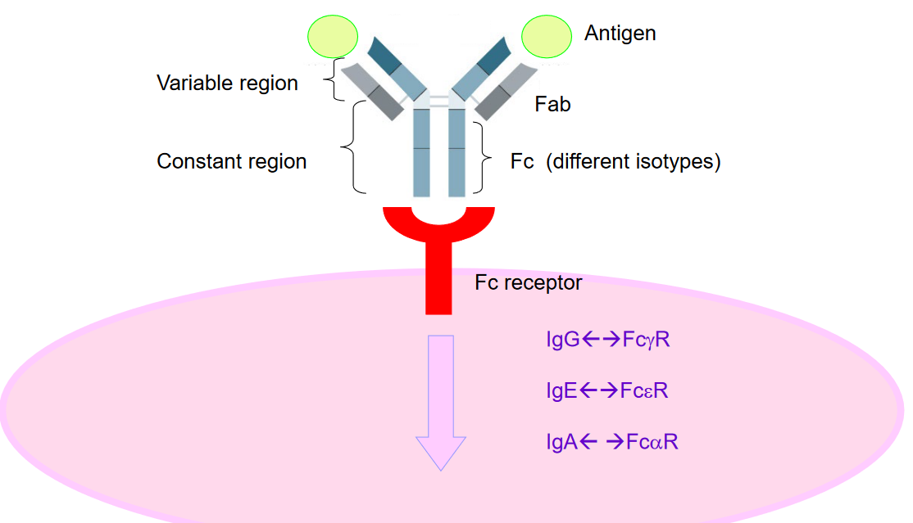
Fc receptors are like special keys that unlock different immune responses in our body. These receptors, found on the surface of various immune cells, can recognize and bind to specific parts of antibodies, known as the Fc region.
When IgG antibodies bind to Fc gamma receptors (Fc\(\gamma\)R), it’s like activating a powerful defense system. This interaction triggers immune cells to attack and destroy pathogens, helping to eliminate threats from our body.
Similarly, when IgE antibodies attach to Fc epsilon receptors (Fc\(\epsilon\)R), it’s like sounding an alarm to fight off allergens and parasites. This interaction sets off inflammatory responses that help our immune system defend against these invaders.
Additionally, IgA antibodies can bind to Fc alpha receptors (Fc\(\alpha\)R), leading to protection of mucosal surfaces like our intestines and respiratory tract. This interaction helps prevent pathogens from attaching to these surfaces and causing infections.
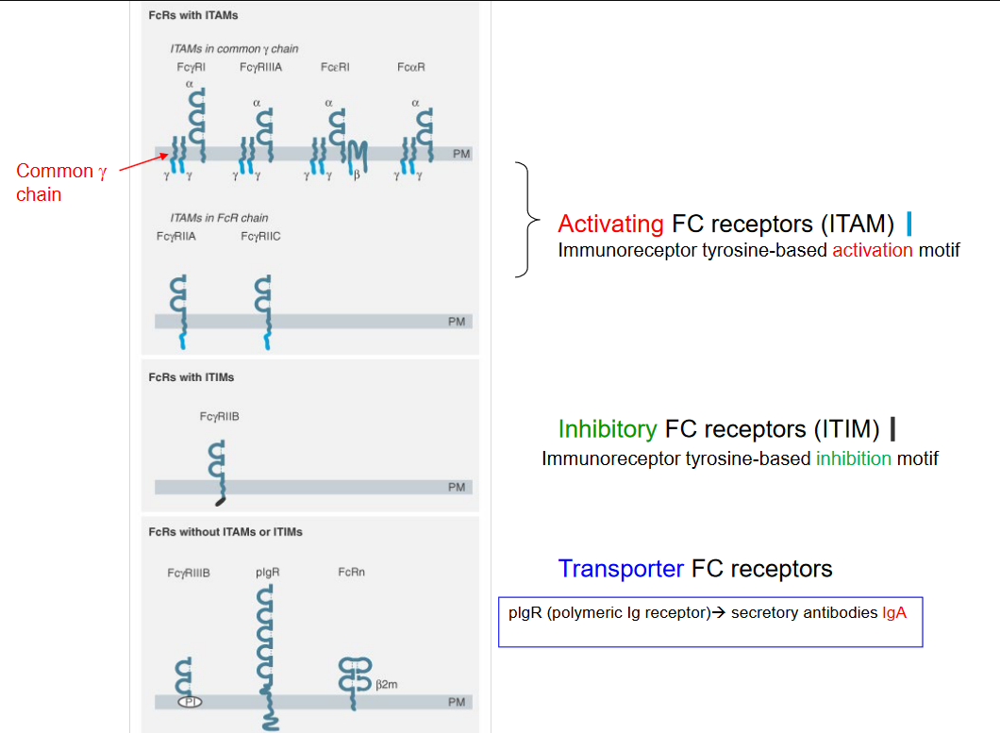
In our immune system, Fc receptors come in different types, each with its own role in regulating immune responses.
Firstly, there are activating Fc receptors, which contain a part called the Immunoreceptor tyrosine-based activation motif (ITAM). When these receptors interact with antibodies, they send signals that activate immune cells, prompting them to attack and eliminate pathogens.
On the other hand, there are inhibitory Fc receptors, which contain the Immunoreceptor tyrosine-based inhibition motif (ITIM). These receptors help regulate the immune response by sending signals that suppress or dampen immune activity, preventing excessive inflammation and tissue damage.
Additionally, there are transporter Fc receptors, such as the polymeric immunoglobulin receptor (pIgR). These receptors are responsible for transporting secretory antibodies, like IgA, across mucosal surfaces such as the intestines and respiratory tract. This helps provide localized protection against infections at these sites, where pathogens commonly enter the body.
4.2.2 Transportation of IgA Antibodies
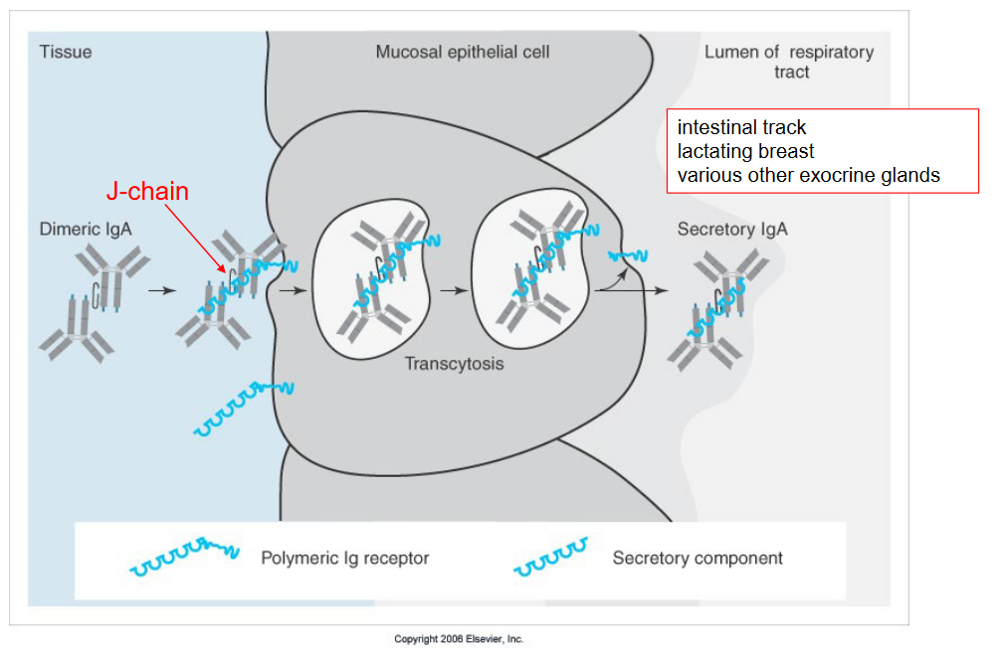
The Fc receptor plays a vital role in transporting IgA antibodies across mucosal epithelial cells, which line surfaces like the intestinal tract, lactating breast tissue, and various other exocrine glands in our body.
In simple terms, think of the Fc receptor as a special carrier that helps IgA antibodies travel through the mucosal epithelial cells. These antibodies are important for defending these surfaces against harmful invaders like bacteria and viruses.
When IgA antibodies encounter pathogens on mucosal surfaces, they bind to them, forming complexes that need to be removed to prevent infection. The Fc receptor on mucosal epithelial cells recognizes these antibody complexes and helps transport them across the cell membrane.
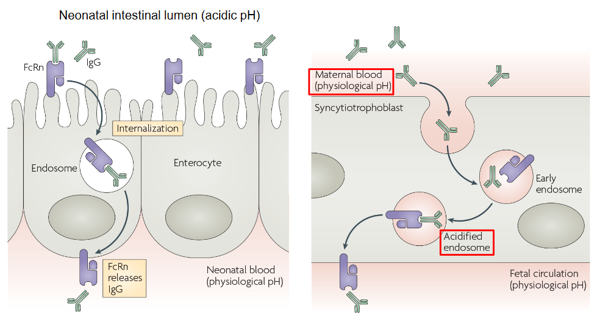
FcRn, or the neonatal Fc receptor, plays a crucial role in transferring IgG antibodies from a pregnant mother to her developing fetus during pregnancy and also from mother to newborn baby after birth.
Think of FcRn as a special transporter that helps IgG antibodies cross the placenta during pregnancy or enter the baby’s bloodstream after birth. This transfer of antibodies provides essential protection to the baby, as their immune system is still developing and they are more vulnerable to infections.
During pregnancy, IgG antibodies produced by the mother’s immune system can pass through the placenta via FcRn and enter the bloodstream of the developing fetus. This transfer of maternal antibodies helps provide passive immunity to the baby, offering protection against various infections early in life.
After birth, FcRn continues to play a vital role in transferring IgG antibodies from breast milk to the newborn baby’s bloodstream during breastfeeding. This helps bolster the baby’s immune system and provides additional protection against infections during the crucial early stages of life.
4.2.3 Antibody-Dependent Cell-Mediated Cytotoxicity (i.e., ADCC)
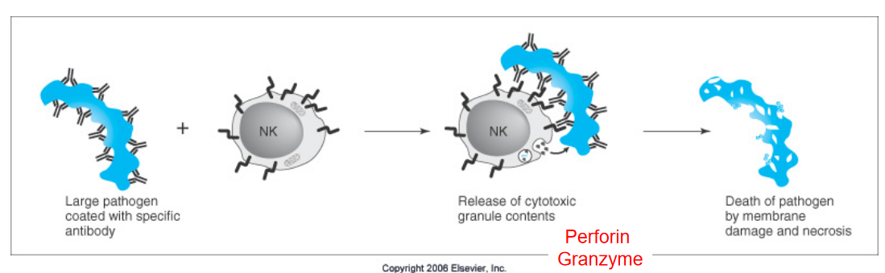
Antibody-Dependent Cell-Mediated Cytotoxicity (ADCC) is a process where immune cells target and destroy cells that are tagged with antibodies. Here’s how it works:
When antibodies encounter a target cell, such as a virus-infected cell or a cancer cell, they bind to specific molecules on the surface of the target. These antibodies then serve as flags, marking the target cell for destruction.
Immune cells called natural killer (NK) cells have receptors that recognize the antibody’s tail region, known as the Fc region. When the NK cell encounters a target cell that has been tagged with antibodies, the NK cell binds to the Fc region of the antibody through its own Fc receptors.
Once bound to the antibody, the NK cell releases toxic substances, such as perforin and granzymes, which penetrate the membrane of the target cell. These toxic substances induce cell death in the targeted cell, effectively killing it.
4.2.4 Sensitization of Mast Cells
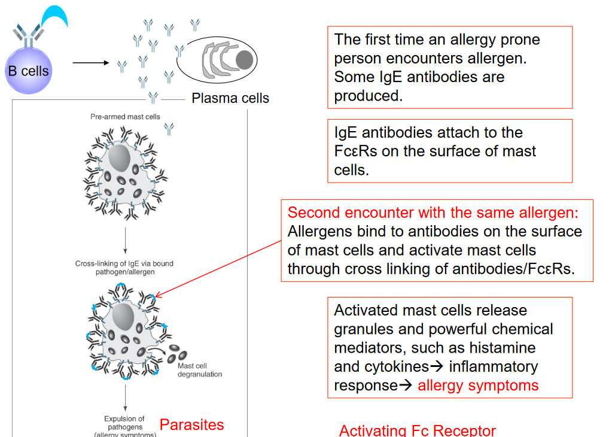
Antibodies play a crucial role in sensitizing mast cells, which is a key process in allergic reactions. When someone prone to allergies encounters an allergen for the first time, their immune system produces specific antibodies called IgE antibodies in response to the allergen. These IgE antibodies then attach themselves to receptors called Fc\(\epsilon\)R found on the surface of mast cells, which are a type of immune cell.
If the person encounters the same allergen again, it binds to the IgE antibodies already attached to the mast cells. This binding causes the IgE antibodies to cross-link with the Fc\(\epsilon\)R receptors on the mast cells. The cross-linking of antibodies and Fc\(\epsilon\)R receptors triggers the activation of mast cells. Once activated, mast cells release granules containing powerful chemical mediators such as histamine and cytokines.
These chemical mediators initiate an inflammatory response in the body, leading to allergy symptoms such as itching, sneezing, runny nose, watery eyes, and sometimes more severe reactions like difficulty breathing or anaphylaxis.
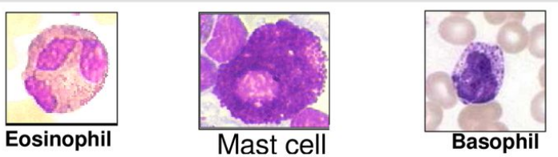
High Affinity IgE Receptor Expressing Cells, including eosinophils, mast cells, and basophils, are crucial components of the immune system. These cell types express receptors with a high affinity for immunoglobulin E (IgE)1, a type of antibody involved in allergic reactions and defense against parasites. Mast cells, found exclusively in tissues, along with basophils and eosinophils, which circulate in the bloodstream, are the primary cells expressing these receptors.
While mast cells are tissue-resident cells, basophils and eosinophils have shorter lifespans and circulate in the blood. Basophils and eosinophils each constitute a small percentage of circulating white blood cells, with basophils accounting for approximately 1% and eosinophils approximately 2.3%. Eosinophils, basophils, and mast cells play distinct roles in the immune response.
Notably, eosinophils possess a unique range of granule contents compared to mast cells and basophils.
4.2.5 Expressing IgM and IgD Antibodies SImultaneously
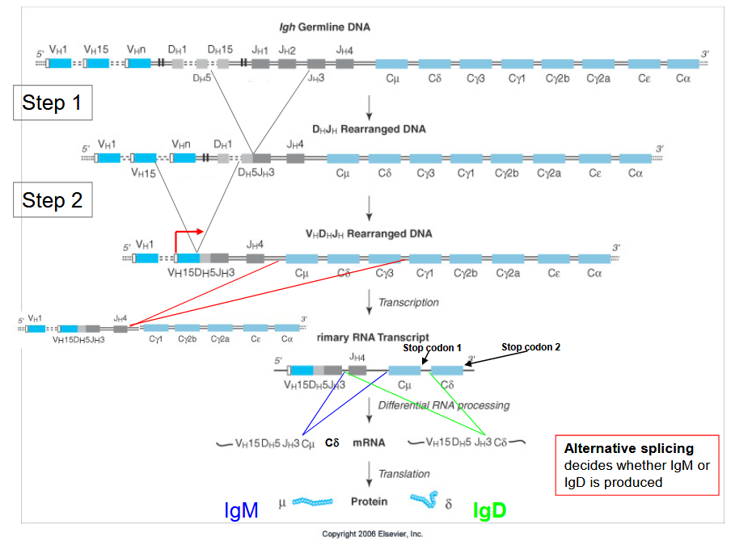
In the immune system, B cells have the remarkable ability to express both IgM and IgD antibodies simultaneously. This co-expression occurs due to alternative RNA splicing during the final stages of antibody production. Initially, during V(D)J recombination, which is a process that generates diversity in antibody molecules, segments of DNA encoding the antibody variable region are rearranged. This rearrangement process is depicted in the accompanying figure.
Once the rearrangement is completed, B cells can produce both IgM and IgD antibodies from the same rearranged DNA segments. The decision between IgM and IgD expression is made at the RNA processing stage, where the same DNA sequence can be transcribed and alternatively spliced into different mature messenger RNAs (mRNAs). This alternative splicing allows the B cell to produce both IgM and IgD antibodies with the same antigen specificity.
4.3 T Cells
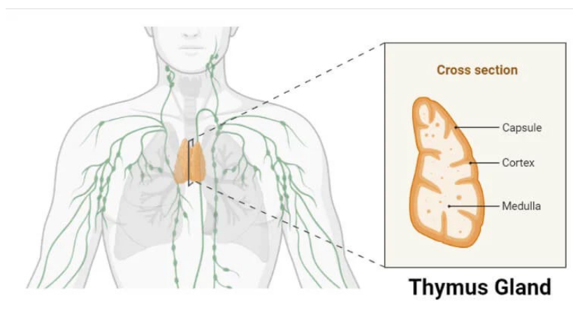
T cells, vital components of the immune system, undergo development and maturation within a specialized organ known as the thymus. The thymus, illustrated in the accompanying diagram, is situated in the chest region, just above the heart. It serves as a crucial site for T cell education and selection, ensuring that T cells mature into functional immune defenders.
As individuals age, the thymus undergoes a process called age-related thymic involution, depicted in the figure illustrating changes in the thymus over the years. During infancy and childhood, the thymus is highly active, with a significant portion dedicated to thymocytes, the precursor cells of T cells. The thymic cortex, where thymocytes undergo selection and maturation, is prominent during these early years.
However, as individuals enter adolescence and adulthood, the thymus gradually undergoes changes. The thymus starts to accumulate adipose tissue, leading to a reduction in its overall size and functional capacity. This process, termed thymic involution, results in decreased thymocyte production and output of mature T cells. Additionally, there’s a decline in the distinction between the cortex and medulla, crucial regions for T cell development and selection.
4.3.1 Developing \(\alpha\beta\) T-Cells
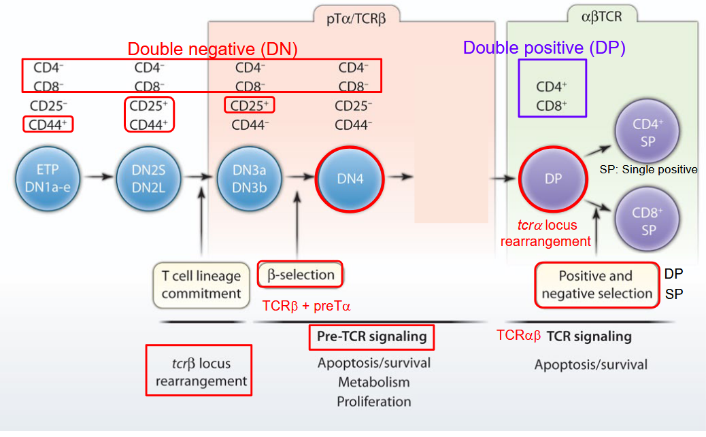
The development of αβ T cells, a crucial component of the adaptive immune system, is a highly orchestrated process illustrated in the accompanying diagram. This process occurs primarily in the thymus, an organ located in the chest region, just above the heart.
In the diagram, the various stages of αβ T cell development are depicted. It begins with the entry of precursor cells, known as thymocytes, into the thymus from the bone marrow. These thymocytes undergo a series of maturation steps and selection processes within distinct regions of the thymus, including the cortex and medulla.
During the early stages of development, thymocytes interact with specialized thymic epithelial cells and other immune cells, receiving signals necessary for their maturation and differentiation. As they progress through the thymus, thymocytes undergo genetic rearrangements in their T cell receptor genes, leading to the generation of diverse T cell receptor (TCR) repertoires.
The diagram highlights the selection process that thymocytes undergo to ensure the survival and functionality of mature αβ T cells. Thymocytes that successfully rearrange their TCR genes and pass through positive selection acquire the ability to recognize antigens presented by major histocompatibility complex (MHC) molecules. Conversely, thymocytes that fail to recognize self-MHC molecules or exhibit reactivity against self-antigens undergo negative selection, leading to their elimination or induction of tolerance mechanisms.
4.3.2 Different Loci of T-Cell Receptors
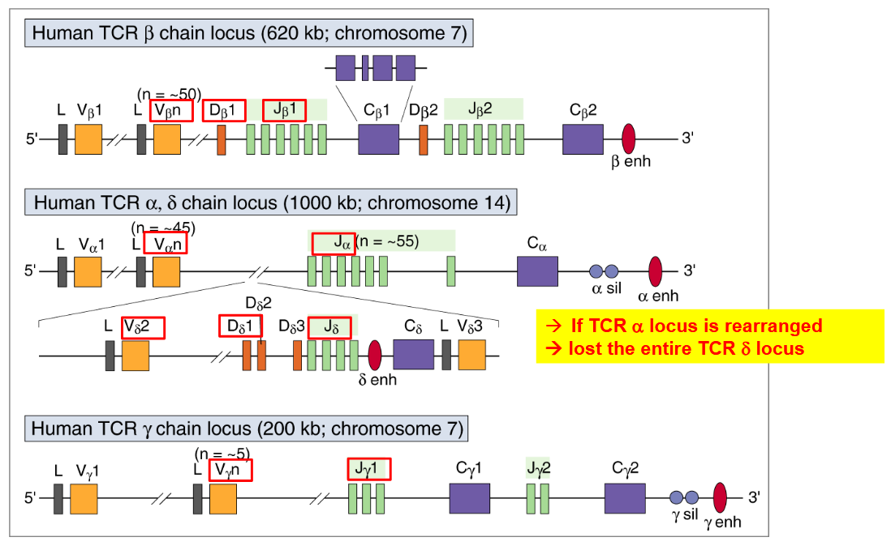
The T-cell receptor (TCR) loci encompass several genetic regions that encode the different components of TCRs, including α, β, γ, and δ chains. These loci play a crucial role in determining the diversity and specificity of TCRs, which are integral for recognizing and responding to antigens presented by antigen-presenting cells.
The diagrams illustrating the TCR loci depict the genetic organization of these regions within the genome. Each locus corresponds to a specific TCR chain, with the α and β loci encoding α and β chains, while the γ and δ loci encode γ and δ chains, respectively.
Within these loci, the genes undergo complex rearrangement processes during T-cell development, known as V(D)J recombination. This process involves the random joining of variable (V), diversity (D), and joining (J) gene segments to generate a diverse repertoire of TCRs with unique antigen-binding specificities.
4.3.2.1 Somatic Recombination
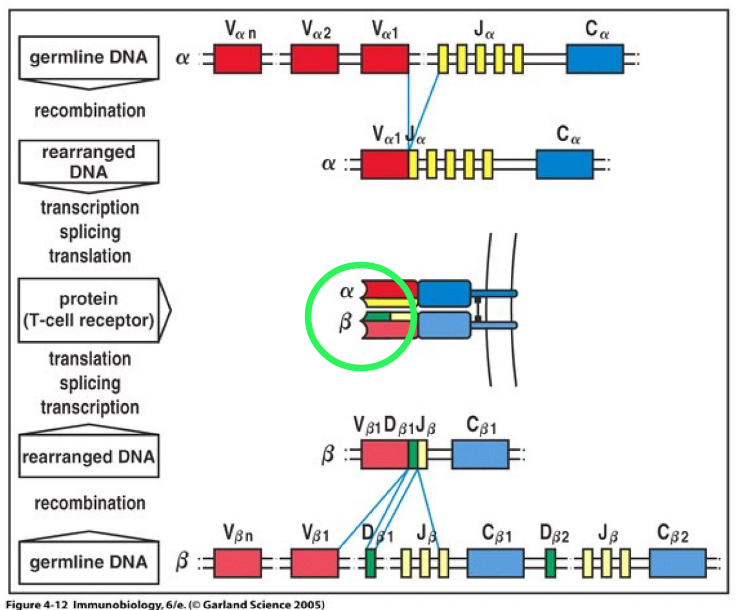
The process of T-cell receptor (TCR) somatic recombination is a crucial mechanism that generates diversity in TCRs, allowing T cells to recognize a wide range of antigens. This process occurs during T-cell development in the thymus and involves the rearrangement of gene segments to produce functional TCR chains.
The diagram illustrating TCR somatic recombination depicts the sequential steps involved in this process. Initially, the gene segments encoding the variable (V), diversity (D), and joining (J) regions of the TCR chain are scattered across the genome.
During T-cell development, specialized enzymes called recombinases facilitate the rearrangement of these gene segments. The diagram shows how V, D, and J gene segments are selected and brought together through DNA recombination events, resulting in the formation of a functional TCR gene.
The rearrangement process involves the precise joining of V, D, and J segments through DNA cutting and rejoining mechanisms. This process generates a diverse repertoire of TCRs with unique antigen-binding specificities, enabling T cells to recognize a wide array of pathogens and foreign antigens.
The precise process of V(D)J end joining is a critical step in the development of T cells, ensuring the generation of functional T-cell receptor (TCR) genes. This mechanism involves the deletion of intervening DNA sequences between the variable (V), diversity (D), and joining (J) gene segments, as well as the addition of nucleotides at the junctions to facilitate joining.
During V(D)J end joining, specific enzymes mediate the deletion of unnecessary DNA sequences and the addition of nucleotides to ensure proper alignment and fusion of V, D, and J segments. This process results in the formation of a complete and functional TCR gene that encodes the TCR protein expressed on the surface of mature T cells.
4.3.3 Allelic Exclusion in T-Cells
Allelic exclusion is a phenomenon observed during T-cell development, where only one allele of the TCR gene is expressed in a given T cell. This ensures that each T cell expresses a single type of TCR, enhancing the specificity and diversity of the T-cell repertoire. The level of allelic exclusion is similar to that observed in the light chain genes of antibodies, with approximately 1-10% inclusion of both alleles.
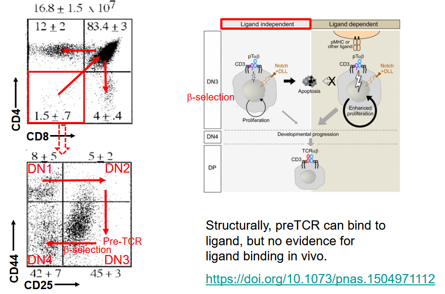
Unlike B cells, T cells do not undergo somatic hypermutation, a process that introduces random mutations in the variable regions of antibody genes to generate diversity. Instead, T-cell receptor diversity is primarily generated through V(D)J recombination and allelic exclusion mechanisms.
Terminal deoxynucleotidyl transferase (TdT) is an enzyme expressed in all T-cell precursors during their development in the thymus. TdT plays a crucial role in the addition of non-template nucleotides (N-nucleotides) during V(D)J recombination, further contributing to the diversity of TCR sequences.
4.3.4 Antigen Binding to T-Cell Receptors versus B-Cell Receptors
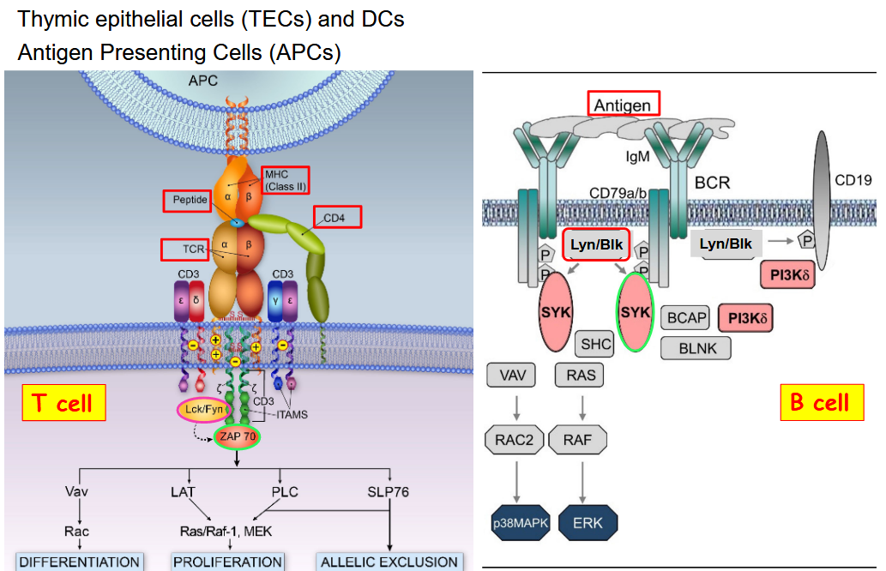
The process of antigen recognition by T cell receptors (TCRs) and B cell receptors (BCRs) involves distinct mechanisms and interactions within the immune system.
When antigens are encountered, TCRs, expressed on the surface of T cells, interact with peptide antigens presented by major histocompatibility complex (MHC) molecules on the surface of antigen-presenting cells (APCs). These APCs, which include dendritic cells (DCs) and thymic epithelial cells (TECs) among others, play a crucial role in capturing, processing, and presenting antigens to T cells. TECs are particularly involved in T cell development and selection within the thymus, while DCs are specialized in antigen presentation and immune activation in peripheral tissues.
In contrast, BCRs, present on the surface of B cells, directly bind to antigens in a more straightforward manner. B cells act as both antigen-presenting cells and antibody-producing cells. Upon encountering antigens, BCRs bind to specific epitopes on the surface of pathogens or other antigens. This binding triggers a series of signaling events that lead to B cell activation, proliferation, and differentiation into plasma cells, which produce antibodies capable of recognizing and neutralizing the antigen.
4.3.5 Developing \(\alpha\beta\) T Cells in Different Areas of the Thymus
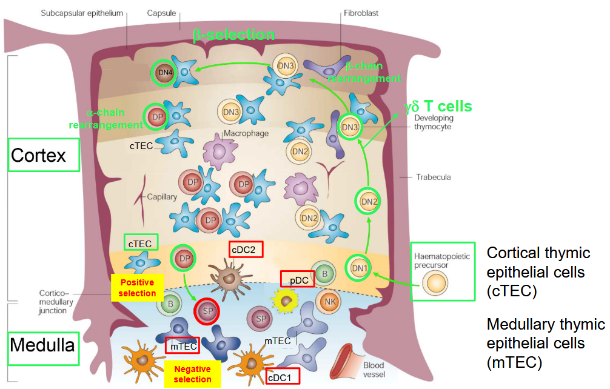
In the thymus, the development of αβ T cells occurs through a highly orchestrated process involving distinct regions within the thymic structure.
As T cell precursors migrate from the bone marrow to the thymus, they enter the thymic cortex, the outer region of the thymus. Within the cortex, T cell precursors undergo a series of developmental stages guided by interactions with thymic epithelial cells (TECs) and other stromal cells. These interactions help shape the T cell receptor (TCR) repertoire and ensure proper T cell development.
The cortex is primarily responsible for the initial stages of T cell maturation, including the rearrangement of TCR genes through V(D)J recombination and the positive selection of T cells that express functional TCRs capable of recognizing self-major histocompatibility complex (MHC) molecules.
As T cells progress through development, they migrate toward the thymic medulla, the inner region of the thymus. In the medulla, T cells undergo negative selection, a process that eliminates T cells with TCRs that strongly bind to self-antigens presented by medullary thymic epithelial cells (mTECs) or dendritic cells (DCs). This process helps prevent the development of autoreactive T cells that could lead to autoimmune diseases.
4.3.5.1 Double Positive to Single Positive Selection
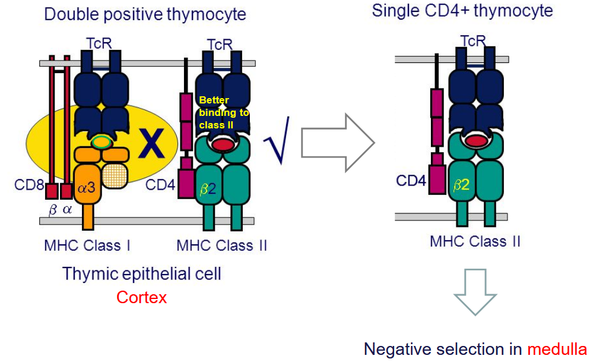
During the process of T cell development in the thymus, T cell precursors undergo several key transitions, including the double-positive (DP) to single-positive (SP) transition.
In the thymic cortex, T cell precursors, known as thymocytes, express both CD4 and CD8 co-receptors on their surface, making them double-positive (CD4+CD8+). This stage is referred to as the double-positive stage because of the presence of both CD4 and CD8 molecules.
As thymocytes progress through maturation, they undergo a critical selection process that leads to the downregulation of one of these co-receptors, resulting in the transition from double-positive to single-positive (SP) thymocytes. This transition is tightly regulated and ensures that mature T cells express only one type of co-receptor—either CD4 or CD8—on their surface.
The double-positive to single-positive transition is a pivotal step in T cell development because it reflects the commitment of T cells to differentiate into either CD4+ helper T cells or CD8+ cytotoxic T cells, each with distinct roles in the immune response. The choice of CD4 or CD8 co-receptor expression is largely determined by interactions with peptide-major histocompatibility complex (MHC) molecules presented by thymic epithelial cells (TECs) and dendritic cells (DCs) within the thymic microenvironment.
Thymocytes that interact with MHC class II molecules predominantly downregulate CD8 and become CD4 single-positive (CD4+ SP) T cells, whereas those interacting with MHC class I molecules downregulate CD4 and become CD8 single-positive (CD8+ SP) T cells.
4.4 Antigen Presentation Pathways by MHC
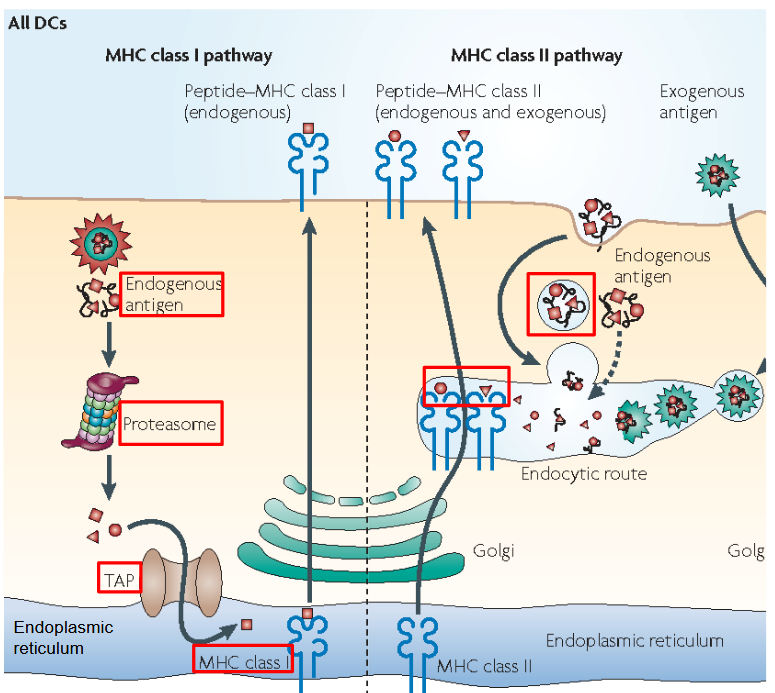
Major Histocompatibility Complex (MHC) molecules play a crucial role in antigen presentation, enabling the immune system to detect and respond to foreign pathogens. There are two main pathways of MHC antigen presentation: Class I and Class II.
Class I Antigen Presentation: MHC class I molecules are found on the surface of all nucleated cells in the body. This pathway presents endogenous antigens, typically derived from intracellular pathogens such as viruses and intracellular bacteria. Inside the cell, proteins from these pathogens are degraded into peptide fragments by the proteasome, a cellular protein complex. Peptide fragments are then transported into the endoplasmic reticulum (ER) by the transporter associated with antigen processing (TAP). In the ER, the peptide fragments bind to newly synthesized MHC class I molecules. The peptide-MHC class I complex is then transported to the cell surface for presentation to CD8+ cytotoxic T cells. CD8+ T cells recognize the peptide-MHC class I complex and can initiate immune responses against infected cells.
Class II Antigen Presentation: MHC class II molecules are primarily found on the surface of antigen-presenting cells (APCs) such as dendritic cells, macrophages, and B cells. This pathway presents exogenous antigens that have been engulfed and processed by the APC. Upon phagocytosis or endocytosis of extracellular pathogens or antigens, the antigens are broken down into peptide fragments within the endocytic vesicles or phagosomes. MHC class II molecules are synthesized in the ER and transported to endocytic vesicles, where they bind to the processed peptide fragments. The peptide-MHC class II complex is then transported to the cell surface, where it is presented to CD4+ helper T cells. CD4+ T cells recognize the peptide-MHC class II complex and can orchestrate immune responses by activating other immune cells and enhancing antibody production.
4.4.1 Positive Selection
Two main pathways facilitate positive selection: one leading to the development of CD8+ single-positive (SP) T cells and the other to the development of CD4+ single-positive T cells.
DP to CD8SP Selection: During positive selection, double-positive (DP) thymocytes interact with cortical thymic epithelial cells (cTECs). Within cTECs, endogenous peptides derived from cellular proteins are processed by specialized protein complexes known as thymoproteasomes. These peptides are presented by MHC class I molecules on the surface of cTECs. DP thymocytes expressing T cell receptors (TCRs) that interact weakly with MHC class I-peptide complexes receive survival signals and mature into CD8+ SP T cells.
DP to CD4SP Selection: Another pathway of positive selection involves DP thymocytes interacting with cTECs but leading to the development of CD4+ SP T cells. In this process, cTECs utilize autophagy-dependent mechanisms to load endogenous peptides onto MHC class II molecules. These MHC class II-peptide complexes are presented on the surface of cTECs. DP thymocytes that interact positively with MHC class II-peptide complexes receive survival signals and differentiate into CD4+ SP T cells.
4.4.2 Antigen Processing for MHCII Presentation via Autophagy
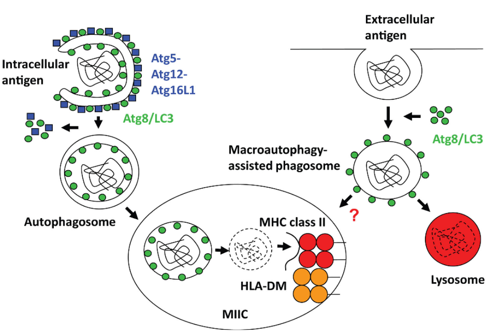
Antigen processing for MHC II presentation via autophagy is a crucial mechanism by which cells generate peptide antigens for presentation to CD4+ T cells. Autophagy, a cellular process involved in the degradation and recycling of cellular components, plays a key role in antigen presentation within antigen-presenting cells (APCs) such as dendritic cells, macrophages, and B cells.
Antigen Capture and Encapsulation: Intracellular antigens, including cytosolic and nuclear proteins, as well as foreign pathogens like bacteria or viruses, are captured by autophagosomes. These autophagosomes are double-membrane vesicles that sequester cellular material destined for degradation.
Autophagosome Formation: The autophagosome then fuses with lysosomes, forming autolysosomes. Within the autolysosome, the engulfed antigens are broken down by lysosomal enzymes into smaller peptide fragments.
Peptide Loading onto MHC II Molecules: Peptide fragments generated from the degradation of antigens are loaded onto MHC class II molecules. This loading process occurs within specialized vesicular compartments called MHC II loading compartments or MIICs.
Transport to the Cell Surface: MHC II-peptide complexes are then transported to the cell surface, where they are displayed for recognition by CD4+ T cells. The presentation of antigenic peptides by MHC II molecules allows CD4+ T cells to survey the internal environment of APCs and mount immune responses against pathogens or aberrant cells.
4.4.3 Proteasomes
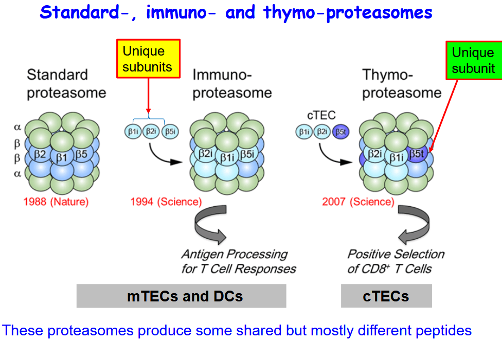
Proteasomes, essential protein complexes within cells, are responsible for breaking down unwanted or damaged proteins. Within the proteasome family, three main types exist: standard proteasomes, immunoproteasomes, and thymoproteasomes. Standard proteasomes serve as the default form, managing protein degradation and turnover critical for cellular health and function.
Immunoproteasomes emerge in response to pro-inflammatory signals like interferon-gamma (IFN-gamma). These specialized complexes contain unique catalytic subunits that replace their standard counterparts. By generating a specific set of peptides enriched in hydrophobic and basic amino acids, immunoproteasomes enhance MHC class I antigen presentation, aiding immune responses against pathogens and tumors.
Thymoproteasomes, predominantly found in thymic epithelial cells (TECs) within the thymus, contribute to the positive selection of developing T cells. With distinct catalytic subunits tailored for the thymic microenvironment, thymoproteasomes produce peptides crucial for MHC class I-mediated antigen presentation. These peptides assist in selecting T cells equipped with appropriate T cell receptors (TCRs) necessary for immune surveillance.
4.4.4 MHCI and MHCII Presentation in cTECs
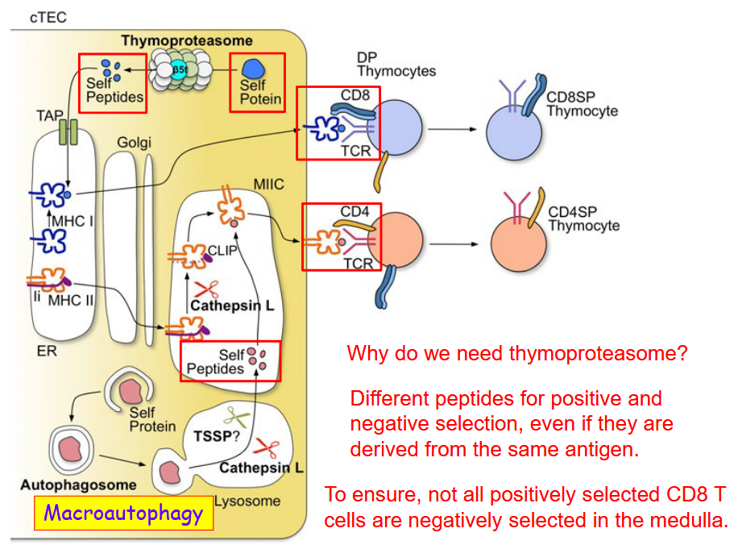
The thymoproteasome, a specialized form of the proteasome found predominantly in cTECs, is essential for this process. Its distinct composition enables it to generate a specific repertoire of peptides derived from endogenous proteins within the cell. These peptides are presented by MHC class I molecules on the surface of cTECs and are crucial for positive selection, promoting the survival of T cells capable of recognizing self-antigens without inducing autoimmunity.
One of the key reasons for the necessity of thymoproteasomes lies in the need to generate different peptides for positive and negative selection. While positive selection ensures the retention of T cells with TCRs capable of recognizing self-MHC complexes, negative selection eliminates T cells that react strongly to self-antigens, preventing autoimmunity. The thymoproteasome’s ability to generate distinct peptide repertoires allows for the precise control of these selection processes, ensuring the proper development of the T cell repertoire.
4.4.4.1 Negative Selection
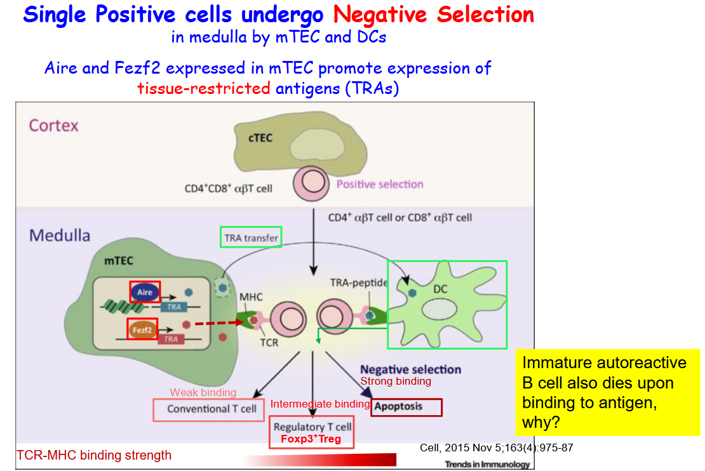
Within the medullary environment, mTECs express a variety of transcription factors, including Aire and Fezf2, that promote the expression of tissue-restricted antigens (TRAs). These TRAs encompass proteins that are typically expressed only in specific tissues throughout the body. By inducing the expression of TRAs, mTECs contribute to the presentation of a broad spectrum of self-antigens to developing T cells, thereby facilitating the process of negative selection.
Aire (Autoimmune Regulator) and Fezf2 (Forebrain Expressed Zinc Finger Protein 2) are critical regulators of gene expression in mTECs. They function to ensure the comprehensive presentation of self-antigens, including those specific to various tissues, enabling developing T cells to undergo thorough scrutiny for self-reactivity. This mechanism helps to eliminate potentially harmful T cell clones that could otherwise lead to autoimmune reactions against self-tissues.
4.5 T-Cells Leaving the Thymus
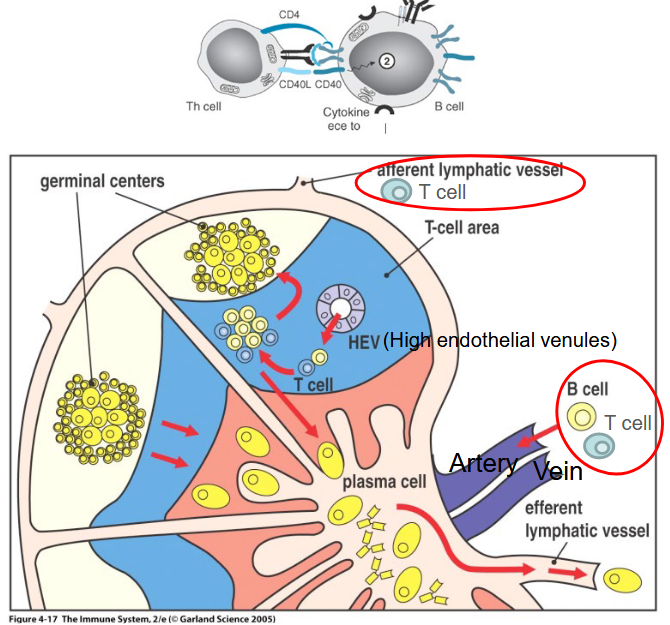
Once mature naïve T cells complete their development in the thymus, they migrate to secondary lymphoid organs such as lymph nodes or the spleen. These organs serve as crucial sites for immune surveillance and response, providing an environment where encounters between antigen-presenting cells (APCs) and T cells can occur.
Within the lymph nodes and spleen, mature naïve T cells await activation by antigen-presenting cells, primarily dendritic cells but also B cells under certain circumstances. Dendritic cells are specialized APCs capable of capturing, processing, and presenting antigens to T cells, initiating the adaptive immune response.
Upon encountering antigens presented by dendritic cells or B cells, mature naïve T cells become activated, initiating a cascade of immune responses tailored to combat specific pathogens or foreign antigens. This activation process involves complex signaling pathways and interactions between T cell receptors and antigen-presenting molecules on the surface of APCs.
4.5.1 T Cell Priming
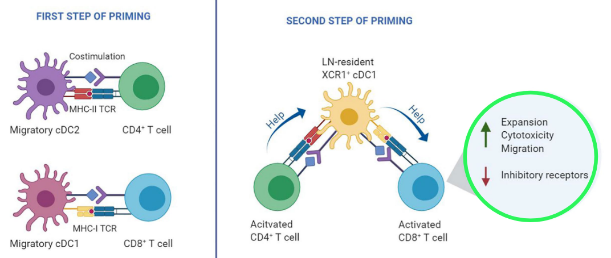
T cell priming by dendritic cells is a pivotal event in the adaptive immune response. Dendritic cells (DCs) are specialized antigen-presenting cells found throughout the body, particularly in tissues that interface with the external environment, such as the skin and mucosal surfaces.
When pathogens or foreign antigens invade the body, DCs capture these antigens through various mechanisms such as phagocytosis, endocytosis, or receptor-mediated uptake. Once inside the DCs, the antigens are processed into smaller peptide fragments.
These peptide fragments are then loaded onto major histocompatibility complex (MHC) molecules, either MHC class I or MHC class II, depending on the nature of the antigen and the pathway of antigen processing. MHC class I presents peptides derived from intracellular pathogens, while MHC class II presents peptides from extracellular pathogens.
Primed dendritic cells then migrate to secondary lymphoid organs, such as lymph nodes, where they encounter and interact with naïve T cells. Within the lymph nodes, DCs present the antigen-derived peptides to T cells by engaging with their T cell receptors (TCRs) in conjunction with co-stimulatory molecules.
This interaction between dendritic cells and naïve T cells leads to T cell activation and differentiation into effector T cells, which can carry out various functions depending on their subtype. For example, CD4+ T cells differentiate into helper T cells, which assist in activating other immune cells, while CD8+ T cells differentiate into cytotoxic T cells, which directly target and eliminate infected or abnormal cells.
4.5.2 Polarization of CD4 T Cells
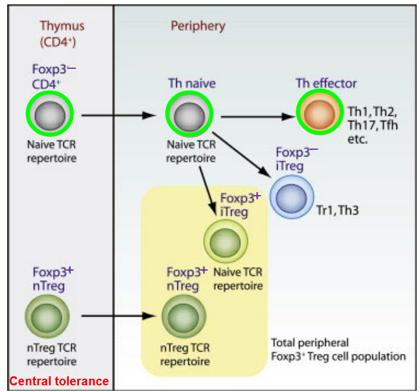
Upon activation, CD4 T cells undergo polarization, a process that directs their differentiation into distinct subsets with specialized functions. This polarization occurs in the periphery, typically within secondary lymphoid organs such as lymph nodes or spleen, where CD4 T cells encounter antigen-presenting cells such as dendritic cells.
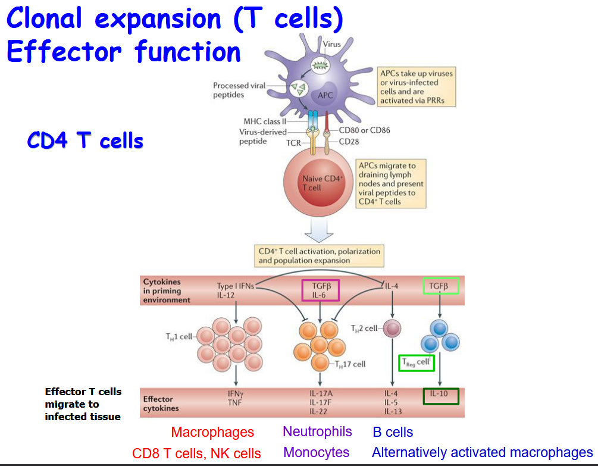
The polarization of CD4 T cells is influenced by various factors, including the cytokine milieu present during T cell activation and the nature of the antigen encountered. Different subsets of CD4 T cells, known as T helper (Th) cells, arise based on the specific cytokine signals received during activation.
4.6 Regulatory T Cells
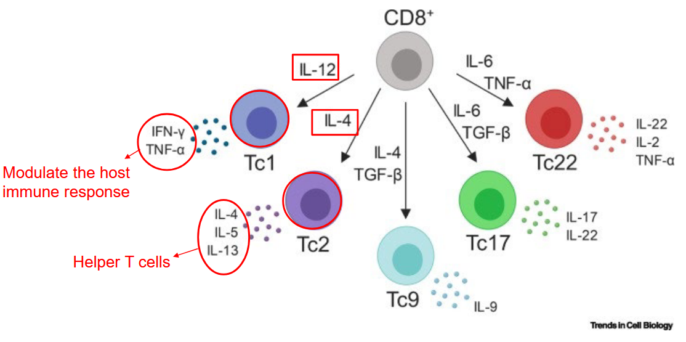
Depending on the kind of T cell a CD8+ T cell differentiates into, several cytokines like TNF-\(\alpha\), INF-\(\gamma\), and IL-4, 5, and 13 can be produced. All of these cytokines do different functions - the first two help regulate the immune response while the last three help activate helper T-cells.
4.6.1 \(\gamma\delta\) T-Cells
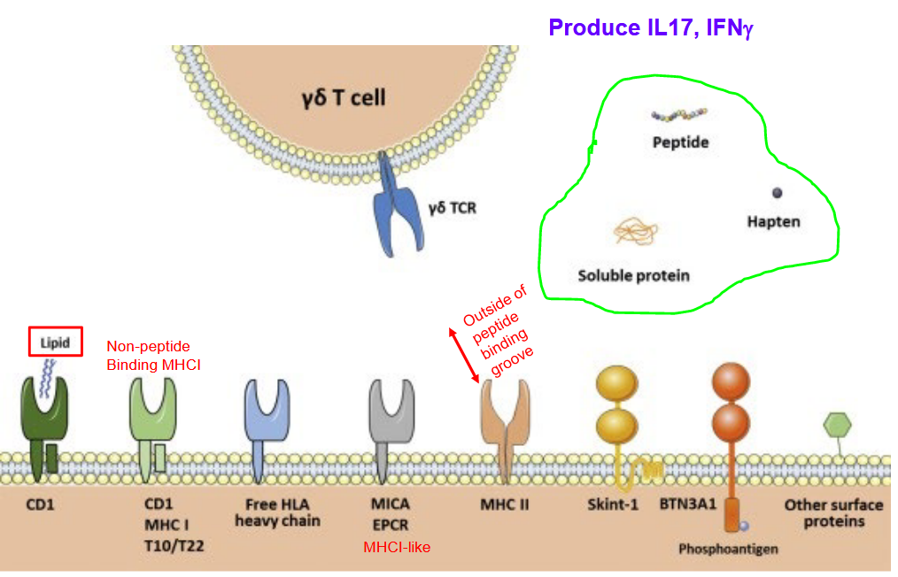
\(\gamma\delta\) T cells are a subset of T cells known for their diverse ligand recognition and the production of cytokines such as IL-17 and IFN-\(\gamma\)
4.6.2 iNKT and MAIT Cells
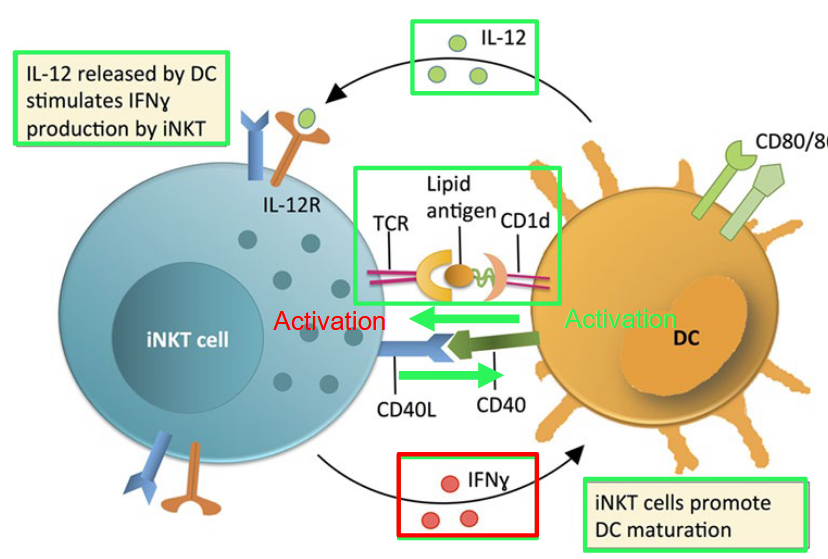
In the human immune system, CD8αβ-positive and double-negative (DN) invariant natural killer T (iNKT) cells exhibit a bias toward a Th1-related phenotype. This means that when these iNKT cells are activated, they tend to produce cytokines associated with Th1 immune responses, such as interferon-gamma (IFN-gamma), which is important for combating intracellular pathogens.
Upon activation by dendritic cells (DCs), iNKT cells play a crucial role in promoting the maturation of DCs. This process of DC maturation is essential for enhancing the immune response against invading pathogens, as mature DCs are more efficient at presenting antigens and activating other immune cells.
In contrast, CD4-positive iNKT cells have the capacity to express cytokines that are more characteristic of a Th2-related immune response. Th2 cytokines, such as interleukin-4 (IL-4) and interleukin-10 (IL-10), are involved in regulating immune responses against extracellular parasites and allergens, as well as in promoting antibody production.
In mice, iNKT cells can be classified as either CD4-positive or double-negative (DN), lacking both CD4 and CD8 markers. This distinction in iNKT cell subsets reflects the diversity and specialization observed in the immune system, allowing for tailored responses to different types of pathogens and immune challenges.
4.6.3 Mucosal Associated Invariant T-Cell (i.e., MAIT)
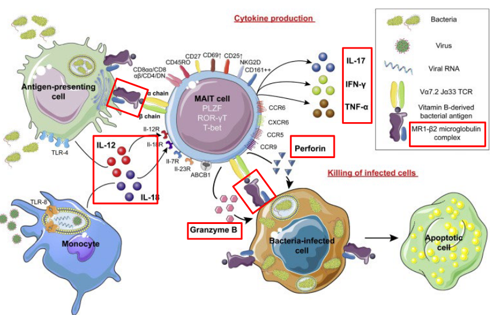
Mucosal-associated invariant T cells (MAIT cells) are a subset of T cells that play a unique role in immune defense, particularly at mucosal sites such as the gastrointestinal tract. MAIT cells are characterized by the expression of a semi-invariant T cell receptor (TCR) that recognizes microbial-derived metabolites presented by the non-classical major histocompatibility complex class I-related molecule, MR1.
These cells are abundant in tissues such as the gut, liver, and lungs, where they serve as sentinels against bacterial and fungal infections. MAIT cells are particularly responsive to bacterial riboflavin (vitamin B2) metabolites produced by a wide range of microbes. Upon activation, MAIT cells can rapidly produce cytokines such as interferon-gamma (IFN-gamma), tumor necrosis factor-alpha (TNF-alpha), and interleukin-17 (IL-17), contributing to the inflammatory response and recruitment of other immune cells to the site of infection.
Also note that these antibodies are typically associated with mast cells that lie just beneath epithelial surfaces. IgG and IgA antibodies are found in extracellular fluid throughout the body.↩︎